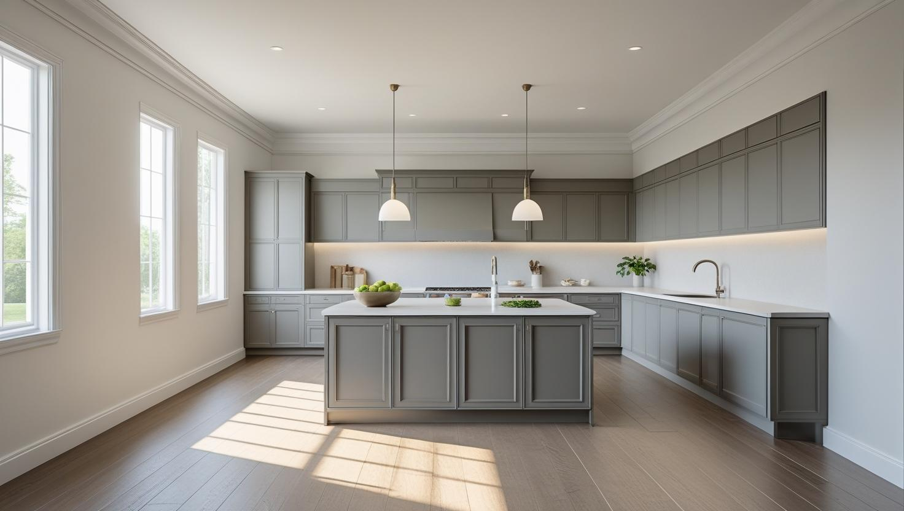
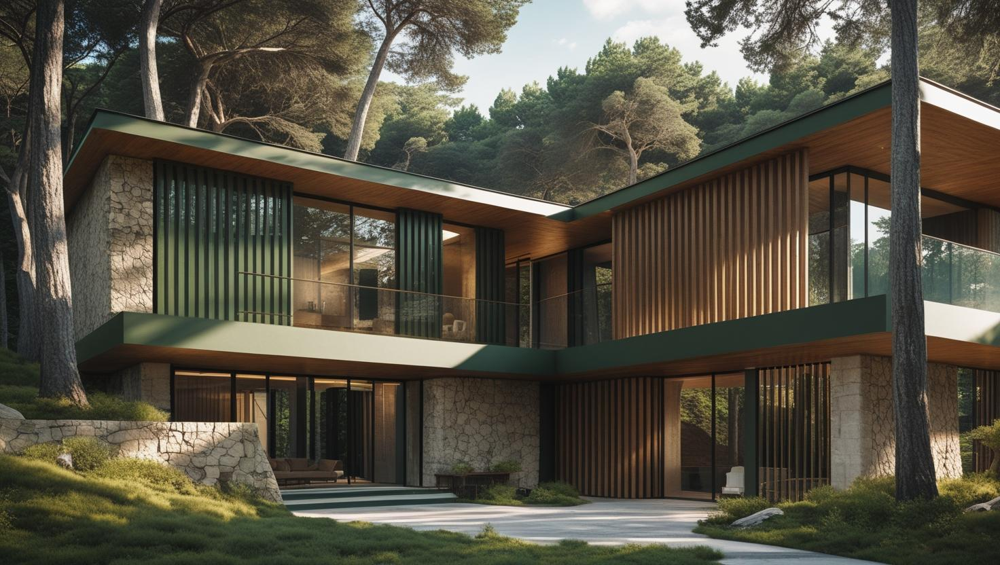
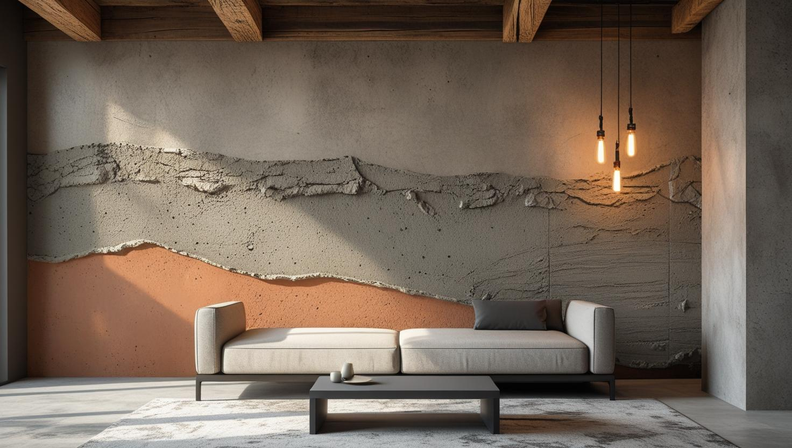

İstanbul Başakşehir Profesyonel Boya Ustası
Kayaşehir'de site dairesi, Bahçeşehir'de villa ya da İkitelli OSB'de ofis: 20 yıllık tecrübemizle her yapının kurallarına ve yüzeyine göre iç ve dış cephe boyası planlıyoruz.
Başakşehir'de Boya Badana: Planlı Konut Siteleri
Başakşehir boyacı ve Başakşehir boya ustası talebinin büyük kısmı planlı konut sitelerinden geliyor. İlçe İstanbul'un görece yeni yerleşimlerinden biri; bu, yüzey hazırlığı açısından belirgin avantaj sağlıyor.
Site dairelerinde duvarlar alçı sıvalı ve düzgün olduğu için ağır raspa nadiren gerekiyor; iş astar ve kat uygulamasına odaklanıyor. Buna karşılık yeni yapılarda ilk yıllarda ince oturma çatlakları çıkabiliyor ve bunlar boyanmadan önce dolgu ile kapatılmalı.
Sitelerde çalışma saatleri, yük asansörü kullanımı ve yönetim izni işin planına giriyor. Başakşehir boya badana randevusundan önce site kurallarını sizden öğrenip planı buna göre kuruyoruz.
Hizmetlerimiz

İç Mekan Boyama
Başakşehir'deki site dairelerinde iç mekân boyası boş daire teslimi, satış ya da kiracı değişimi ve renk yenileme gibi farklı ihtiyaçlarla gündeme gelir. Asıl özen tavan ile duvar arasındaki renk çizgisine, priz ve anahtar çevrelerine, kullanılmış dairelerde de leke ve deliklere gösterilir.
- Boş daire teslim boyası
- Tavan ve duvar renk ayrımı
- Leke örtücü astar
- Kapı ve pervaz boyama

Dış Cephe Boyama
Bahçeşehir'deki müstakil ve bahçeli evlerde dış cephe boyası, bahçe duvarı ve teras korkuluklarıyla aynı keşifte değerlendirilebilir. Güneş alan cephelerdeki solma, ince çatlak ve kabarmalar ayrı ayrı not edilir; toplu yapılarda cephe işi genellikle yönetim adına planlanır.
- Villa ve müstakil ev dış cephesi
- Bahçe duvarı boyası
- Teras ve balkon korkuluğu
- Solma ve çatlak onarımı

Dekoratif Boyama
Bahçeşehir'deki dubleks ve villalarda merdiven boyunca uzanan geniş duvarlar, site dairelerinde ise yatak odası başlık duvarı dekoratif boya için elverişli yüzeylerdir. Ofislerde toplantı odasına kurumsal renkle uyumlu bir doku seçilebilir.
- Merdiven duvarında doku uygulaması
- Yatak odası başlık duvarı
- Toplantı odası vurgu duvarı
- İpek mat ve saten seçenekleri
Fiyat Tablosu
| Hizmet Türü | Metrekare Fiyatı | Ortalama Süre (100m²) | Garanti |
|---|---|---|---|
| İç Cephe Boyama | 100-200 TL | 2-3 Gün | Uygulama kapsamına göre |
| Dış Cephe Boyama | 150-280 TL | 3-5 Gün | Uygulama kapsamına göre |
| Dekoratif Boyama | 250-500 TL | 4-7 Gün | Uygulama kapsamına göre |
| Ofis Boyama | 120-220 TL | 2-4 Gün | Uygulama kapsamına göre |
Metrekare fiyatları yaklaşık ön değerlendirme aralığıdır. Uygulanacak ölçüm yöntemi, boyanacak alanın kapsamı, yüzey durumu, tamirat ihtiyacı, kat sayısı ve malzeme seçimi keşif sırasında netleştirilir.
Dış cephe boya fiyatları uygulama alanı için yaklaşık 150–280 TL/m² aralığındadır. Kesin hesaplama yöntemi ve teklif; yüzey durumu, bina yüksekliği, erişim veya iskele ihtiyacı, tamirat kapsamı, boya sistemi ve uygulanacak kat sayısına göre keşif sırasında netleştirilir.
Uygulama kapsamına göre işçilik garantisi sağlanır. Garanti kapsamı ve istisnaları teklif veya iş sözleşmesinde belirtilir.
Bu rakamlar İstanbul Boyacılık'ın 2026 gösterge fiyat aralığıdır. Bir piyasa ortalaması değildir. Kesin fiyat; yüzey durumu, hazırlık ve tamirat miktarı, uygulanacak kat sayısı, seçilen malzeme sınıfı, ulaşım ve kat koşulları ile evin eşyalı mı boş mu olduğu keşifte görüldükten sonra belirlenir.
Başakşehir'de yapı stoğu yeni olduğu için hazırlık kalemi çoğu işte sınırlı kalıyor ve bu, aralığın alt tarafında kalmayı kolaylaştırıyor. Aralığı yukarı taşıyan şey genellikle site içi çalışma ve taşıma koşulları ile eşyalı çalışmanın getirdiği hazırlık süresi.
Bahçeşehir'de Villa ve Bahçeli Evlerde Boya Planı
Bahçeşehir'deki villa, dubleks ve bahçeli evlerde boya işi tek bir daireden daha geniş bir kapsam taşır: merdiven boşluğu, yüksek tavanlı salon, dış cephe ve bahçe duvarı aynı teklifte ele alınabilir.
- Merdiven ve galeri boşlukları: İki kat boyunca uzanan duvarlarda güvenli erişim için iskele veya uzun merdiven gerekip gerekmediği keşifte belirlenir.
- Güneş alan cepheler: Güneye ve batıya bakan cephelerde solma ve ince çatlaklar daha erken görülebilir; renk tonu ve dış cephe astarı buna göre seçilir.
- Bahçe duvarı ve metal aksam: Toprağa yakın duvar dipleri ile metal korkuluklarda nem ve pas kontrolü boyadan önce yapılır.
- Çatı katı ve teras: Eğimli tavanlar ve teras duvarları sıcaklık farkıyla daha kolay çatlayabildiği için dolgu ve astar kontrolü ayrıca yapılır.
Villa ölçeğindeki işlerde maliyet kalemlerini önceden görmek için villa boyama fiyatları rehberimizi inceleyebilirsiniz.
Kayaşehir ve Başak'taki Kullanılmış Site Dairelerinde Boya Yenileme
Kayaşehir ve Başak'taki sitelerde el değiştiren ya da uzun süre oturulmuş dairelerde boya yenilemenin sonucu, lekeleri, delikleri ve eski renkleri kapatacak hazırlığa bağlıdır.
Kullanılmış dairelerde boyadan önce genellikle şu noktalara bakılır:
- Mobilya izleri, çivi ve dübel delikleri
- Mutfak ve banyo çevresinde yağ ya da buhar lekesi
- Kuzeye bakan odalarda pencere çevresinde küf
- Koyu renkli bir duvarın açık renge döndürülmesi
Yağ ve su lekeleri leke örtücü astarla kapatılmadan boyanırsa ikinci katta yeniden belirebilir. Koyu renkten açık renge geçişte gereken kat sayısı artabileceği için bu durum keşifte ayrıca not edilir.
Güvercintepe ve Şahintepe'de Apartman Ortak Alanı ve Dış Cephe Kararları
Başakşehir'de her yapı site içinde değildir; Güvercintepe ve Şahintepe gibi mahallelerdeki bağımsız apartmanlarda merdiven boşluğu ve dış cephe boyası, kat malikleriyle birlikte karar verilen işlerdir.
- Karar: Merdiven boşluğu ve dış cephe gibi ortak yerlerin boyası, yönetim planına göre genellikle kat malikleri toplantısında konuşulur.
- Kapsam: Hangi yüzeylerin boyanacağı ve hangi boya sisteminin kullanılacağı yazılı teklifte gösterilir; bütçe bu belge üzerinden karşılaştırılır.
- İzin: Dış cephe için kaldırıma iskele kurulacaksa belediyeden izin gerekebilir; bu konu iş başlamadan önce yönetimle birlikte netleştirilir.
- Sakinlerin kullanımı: Asansörü olmayan binalarda malzeme merdivenden taşınır; merdiven boşluğu kat kat boyanarak binanın kullanımı sürdürülür.
İkitelli OSB'de Ofis ve İş Yeri Boyama
İkitelli Organize Sanayi Bölgesi'ndeki ofis ve iş yerlerinde boya işi, çalışanların ve ziyaretçilerin alanı kullanmaya devam edebileceği bir sırayla planlanır.
Keşifte konuşulan başlıca konular:
- Boşaltılabilecek bölümlerin sırası ve günleri
- Kurumsal renkler ve logo duvarı
- Su bazlı iç cephe boyası ve havalandırma planı
- Bilgisayar, arşiv ve dosya dolaplarının korunması
Çalışma alanında renklerin odak ve yorgunluk üzerindeki etkisi için ofis boyamada verimliliği artıran renkler yazımıza göz atabilirsiniz.
Başakşehir’de Hizmet Verdiğimiz Mahalleler
Aşağıdaki mahallelerde site dairesi, bağımsız apartman, villa ve ofis için Başakşehir boya badana keşfi yapıyoruz:
Başakşehir Mahalleleri
- Başakşehir Kayabaşı Mahallesi
- Başakşehir Güvercintepe Mahallesi
- Başakşehir Mahallesi
- Başakşehir Başak Mahallesi
- Başakşehir Bahçeşehir 2. Kısım Mahallesi
- Başakşehir Bahçeşehir 1. Kısım Mahallesi
- Başakşehir Şahintepe Mahallesi
- Başakşehir Ziya Gökalp Mahallesi
- Başakşehir Altınşehir Mahallesi
- Başakşehir Şamlar Mahallesi
- Başakşehir İkitelli OSB Mahallesi
Başakşehir Boyacılık Müşteri Yorumları
"Başakşehir'de evimizin iç cephe boyasını yaptırdık, işçilik ve detaylar çok iyiydi. Usta ekip oldukça profesyoneldi."
Mert Yılmaz
Başakşehir / İstanbul
"Ofisimizin dış cephesini boyattık, zamanında ve temiz iş yaptılar. Fiyat performans açısından çok memnun kaldık."
Aylin Çelik
Kayabaşı / Başakşehir
"Başakşehir İstanbul Boyacılık ekibi ile çalışmak çok iyiydi. Hem uygun fiyat hem de kaliteli hizmet sundular."
Hakan Demir
Şahintepe / Başakşehir
Faydalı Bağlantılar
Başakşehir boya badana planında fiyat hesabı, boya markası ve yakın ilçe seçeneklerini birlikte değerlendirmek için aşağıdaki rehberler kullanılabilir.
Başakşehir Boya Ustası Hakkında Sık Sorulan Sorular
Başakşehir'de boya badana fiyatı site dairesi ile villada neden farklı çıkıyor?
Site dairesinde iş çoğunlukla iç duvar ve tavanla sınırlı kalır. Villa ve bahçeli evde merdiven boşluğu, yüksek tavan, dış cephe ve bahçe duvarı eklendiği için hem metraj hem de erişim ihtiyacı artar. Yukarıdaki fiyat tablosu metrekare başına gösterge aralıkları verir; evinizin kesin tutarı keşifte ölçülen kalemlerle belirlenir.
Sitede dış cephe veya balkon rengini tek başıma değiştirebilir miyim?
Genellikle hayır. Dış cephe ve balkonun dışarıdan görünen yüzleri binanın ortak görünümüne dahil olduğundan renk değişikliği yönetim planına ve kat malikleri kararına bağlıdır. Daire içindeki duvarların rengi ise size aittir.
Site yönetimi çalışma saatlerini kısıtlıyor, sorun olur mu?
Olmuyor. Çoğu sitede belirli saat aralıkları ve yük asansörü kuralları var; planı buna göre kuruyoruz. Kısıtlı saat aralığı işin gün sayısını uzatabiliyor, bunu teklifte baştan belirtiyoruz.
Yeni dairede astar gerekli mi?
Yeni ve düzgün alçı yüzeyde bile astar uygulanıyor; boyanın tutunması ve sarfiyatın kontrol altında kalması için. Astarsız uygulamada boya emiliyor ve kapatıcılık için fazladan kat gerekiyor, sonuçta hem maliyet hem süre artıyor.
Taşınmadan önce mi sonra mı boyatmalıyım?
Mümkünse taşınmadan önce. Boş dairede ekip eşya toplamayla vakit kaybetmediği için iş daha kısa sürüyor ve koruma işi azalıyor. Eşyalı evde de çalışıyoruz ama süre uzuyor.
Başakşehir boya ustası renk seçiminde yardımcı oluyor mu?
Oluyoruz. Keşifte odanın aldığı gün ışığına, zemin ve mobilya tonlarına bakarak birkaç seçenek öneriyoruz. Açık planlı salon ve mutfaklarda iki renk arasındaki geçişin nerede biteceği de işe başlamadan önce kararlaştırılır.
İletişim
İletişim Bilgileri
Telefon: 0507 832 29 12
E-posta: boyaustamistanbul@gmail.com
10+ Uzman Ustamızla Başakşehir ve çevresine hizmet veriyoruz.
Çalışma Saatleri: Pzt-Cmt 00:00-23:59